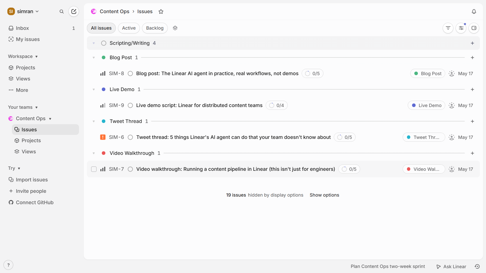
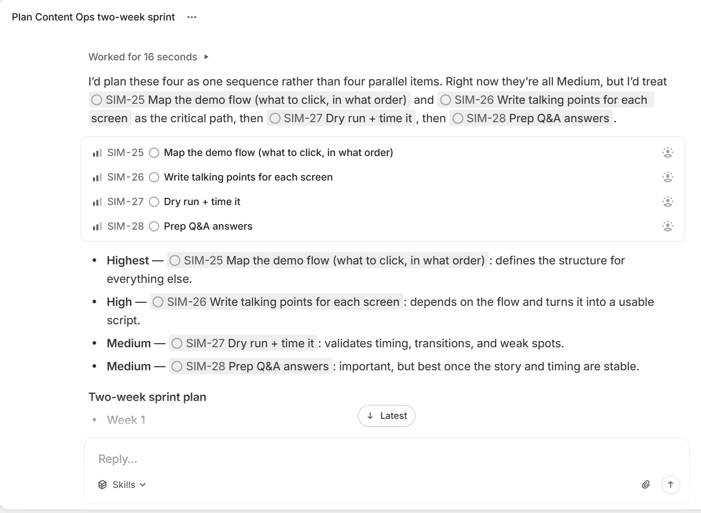
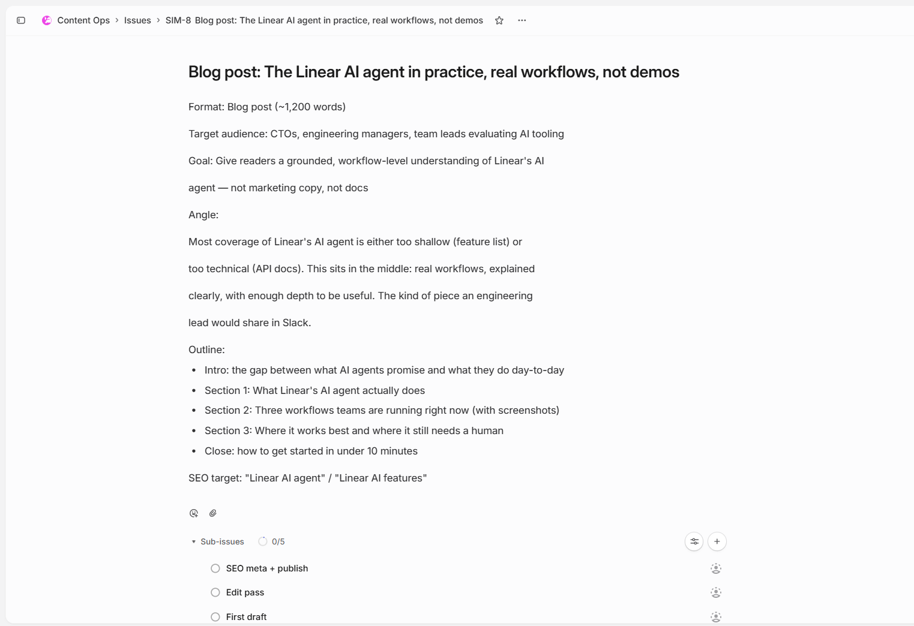

Describing how I'd use a tool is less useful than actually using it. What follows is the workspace, the briefs, the sub-issues, the AI sprint plan, and why the content gap Linear described is one I've already been working on.
"There's a growing gap between what Linear can do and what people think it can do."
Linear — Product Marketing & Content role description, 2026Four years of my career was spent closing exactly this kind of gap, making Microsoft cloud products feel concrete and useful to enterprise buyers who had no idea what Azure or Copilot could actually do for them day-to-day. I've done this before. Tech should be accessible to everyone, and I can and have proven my ability to communicate with a hyper-online engineer and the average businessperson who works outside of the bubble. Figuring out the real use cases, finding the right format to show them, and getting that in front of the right people. The work Linear is describing is the same work. The product is different. The gap is the same.

The four content types map to how people actually discover a product, long-form search, social distribution, visual demonstration, live conversation. Each brief was written for a specific reader with a specific goal, not to cover the product comprehensively.


I've found, both professionally and personally, that highly skilled technical experts struggle severely when trying to communicate with everyone else. They've understandably spent years gaining fluency in their craft, and often forget that the shorthand stops meaning anything outside the room. My ability to communicate these products is backed by real understanding of how they work. I've spent four years at Xpress making AI and cloud products legible to people who didn't speak the language, and I've spent enough time with the people who do to know when the explanation needs to go deeper.
I've used Copilot and Azure AI hands-on in real commercial workflows. My MA thesis was a long-form research project into how AI-driven personalisation actually operates in practice in B2B markets, so I can talk about AI products with genuine fluency.
I built this pipeline because it's the best way to show how I'd work. If you want to see the issues in more detail, I'm in Berlin, available immediately, and easy to reach.